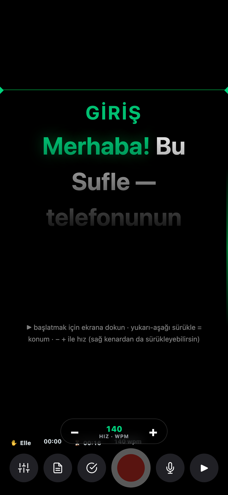
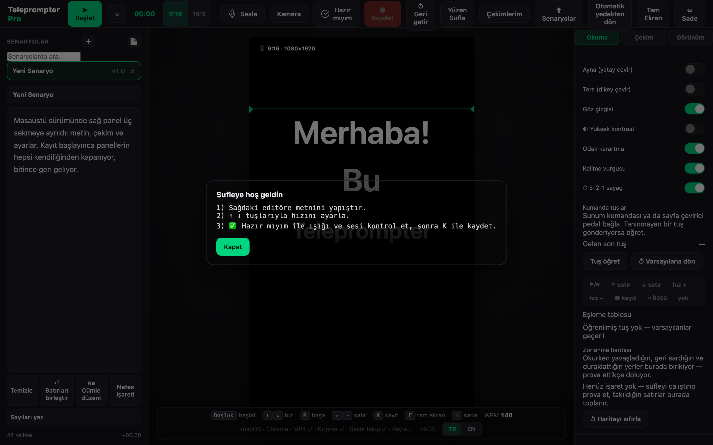

Kameraya bakarken metnini oku.
Sufle telefonunu ya da bilgisayarını bir sufle cihazına çeviriyor. Metnin kameranın hemen altında akar, böylece okurken bile göz teması bozulmaz.
iPhone · Android · Mac · Windows — kurulum gerekmez, tarayıcıda açılır. Hesap yok, ücretsiz.

Okuduğun belli olmasın
Sufle'nin yaptığı tek iş bu: metni doğru yere koymak ve senin hızınla akıtmak.
Konuştukça akar
Sesle takip açıkken sufle senin hızına uyar; duraksarsan bekler, hızlanırsan yetişir. İstemezsen kapat, dakikadaki kelime (WPM) ile sabit hızda aksın.
Çekimi burada yaparsın
Kamera ve mikrofon uygulamanın içinde: okurken kaydedersin, ayrı bir uygulamaya geçmen gerekmez.
Yazın arayüzün altında kalmaz
Reels, Shorts, Story ve YouTube oranları hazır; platform arayüzünün kapatacağı alanlar ekranda işaretli.
Okumayı kolaylaştıran araçlar
Okuma şeridi, göz çizgisi, nefes işaretleri, biyonik okuma ve disleksi yazı tipi. Yüksek kontrast teması ve hareket azaltma desteklenir.
Çekimden sonrası da hazır
Videoyu baştan ve sondan kesebilir, altyazı dosyasını senaryodan üretebilirsin — metin zaten elinde, bu yüzden yazım her zaman doğru.
Kendi metinlerinle çalış
Word dosyası (.docx), düz metin ve altyazı dosyalarını doğrudan alır. Bütün senaryolarını tek dosyaya yedekleyip geri yükleyebilirsin.
Okuduğun kelime altyazıda vurgulanır
Altyazı senaryodan üretildiği için yazım her zaman doğru; vurgu da tahmin değil, senin okuma anına dayanıyor. Altı görünüm, üç animasyon ve üç konum var; görünümü kendi kamera görüntünün üstünde kartlara bakarak seçersin.
Marka kitin çekime işlenir
Logo, marka rengi ve ad-unvan alt bandı videoya girer. Marka rengin koyuysa yazı okunur bir renge düşer, şerit yine senin rengin kalır.
Süreye sığdır
Hedef süreyi ver, hız metni tam o sürede bitirecek şekilde ayarlansın; duraklama işaretleri hesaba katılır. Sığmıyorsa sebebini söyler.
Çekimden sonra klip önerileri
Bölüm başlıkları, vurgu işaretleri ve okuma zamanlarından kısa klipler önerilir. Her öneri hangi ölçüme dayandığını yazar; başlıklar senaryodan birebir alınır.
Müzik yatağı
Cihazından seçtiğin müzik çekime karışır ve konuşurken kendiliğinden kısılır. iPhone ve iPadde kapalı tutulur; sebebi uygulamada yazar.
Sağdan sola diller
Arapça, İbranice ve Farsça senaryolar doğru yönde akar. Yön satır satır belirlendiği için iki dilli senaryo bozulmaz.
Masaüstünde daha fazlası
Harici kamera seçimi, kayıtta panellerin kendiliğinden kapanması, telefonundan uzaktan kumanda ve kumanda ekranında kameranın gördüğü kare — tek başına çekim yaparken kadrajını görebilirsin. OBS ve vMix kullananlar için şeffaf zeminli yayın kipi var.

Verilerin sende kalır
Bu bir pazarlama cümlesi değil, ölçülen bir sınır. Kaynak kodda sayıldı:
- Bize ait sunucuya giden ağ çağrısı: 0
- Analitik, izleme, çökme raporu aracı: 0
- Reklam kimliği, parmak izi, çerez: 0
- Üçüncü taraf kütüphane: 0 — uygulama tek dosya, dışarıdan kod yüklemiyor
- Hesap, e-posta, telefon numarası: istenmiyor
Sesle takip açıkken konuşmanız tarayıcınızın kendi ses tanıma servisine gider; Chrome ve Safari bunu üreticinin sunucusunda işler. Bunu saklamak yerine yazıyoruz. Ayar varsayılan olarak kapalıdır ve kapalıyken diğer bütün özellikler tam çalışır.
Kurulum yok, kayıt yok
Bağlantıyı aç, metnini yapıştır, çekmeye başla. Ana ekrana ekleyebilirsin; çevrimdışı da çalışır.